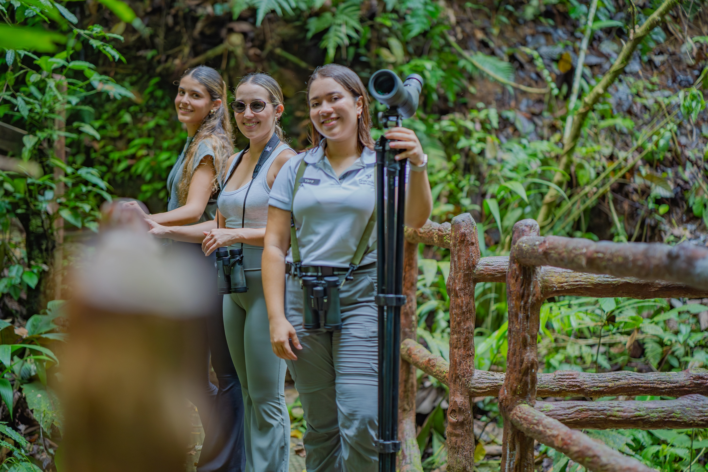
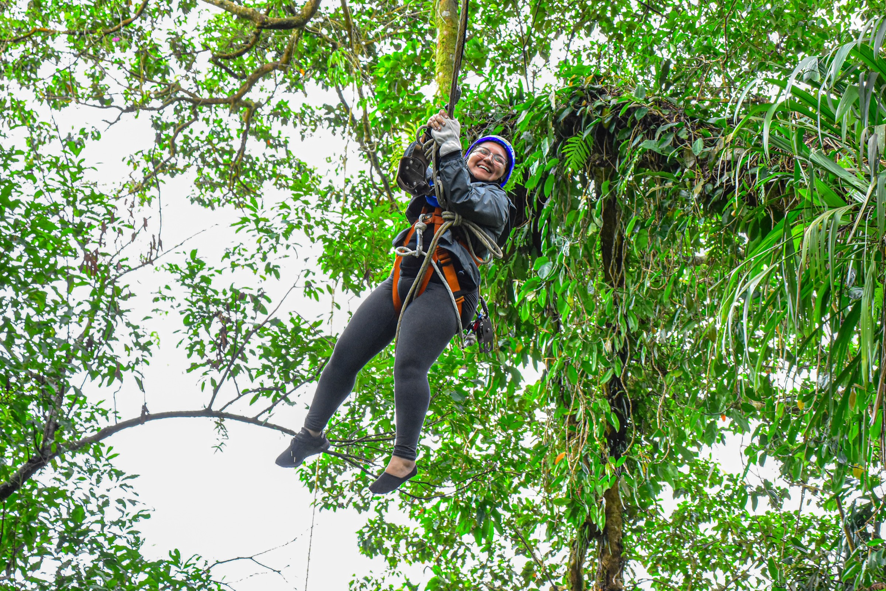
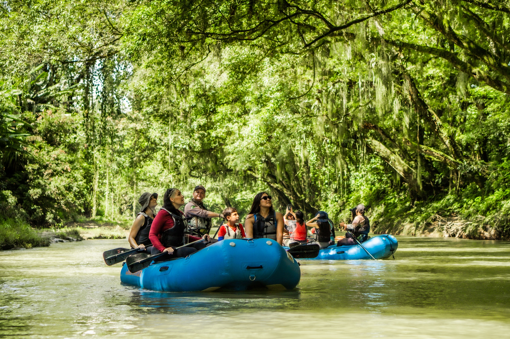
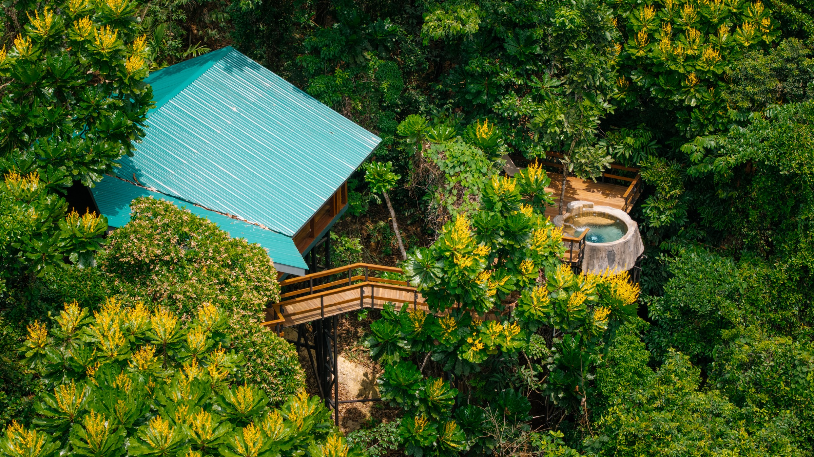

Organizar un viaje con amigos suele empezar con entusiasmo y un chat que crece más rápido que las decisiones. Alguien quiere aventura, otra persona prefiere naturaleza y alguien más pregunta cuándo van a descansar. En la región de La Fortuna y Arenal, esa diferencia puede convertirse en una ventaja si el programa permite compartir experiencias sin exigir que todos deseen lo mismo. Chachagua Rainforest Resort & Hot Springs puede ser la base para un viaje en el que una buena excursión tenga tanto lugar como una tarde sin reservas.
La propuesta consiste en elegir entre tres experiencias externas: canopy en Ecoglide, un safari float por el río Peñas Blancas y una expedición al Bosque Eterno de los Niños en Pocosol. Son alternativas con ritmos distintos, no tres actividades que deban contratarse juntas. Un Travel Designer, el asesor local que ayuda a organizar la estadía, puede comparar logística, exigencia y preferencias. Para cinco días y cuatro noches, seleccionar dos y dejar una tercera como alternativa puede funcionar mejor que intentar completar toda la lista.
La primera decisión se toma entre todos

Antes de mirar fotografías, pidan a cada persona que elija una experiencia que le gustaría vivir y una condición importante para disfrutarla. Puede ser evitar alturas, caminar a un ritmo determinado, disponer de tiempo propio o tener clara la distribución de habitaciones. Esta conversación reduce la carga sobre quien organiza. También evita que una actividad termine elegida porque una sola persona investigó más, en lugar de porque el grupo la desea. Una decisión compartida empieza por entender las diferencias, no por borrarlas.
Después, separen lo que quieren hacer juntos de lo que puede realizarse en grupos pequeños. No todos necesitan reservar la misma excursión para sentir que están viajando juntos. Reunirse para comer o conversar al regreso puede ser el punto común del día. Si se dividen, coordinen horarios, puntos de encuentro y transportes por separado. No supongan que un vehículo esperará o que una reserva puede modificarse sin costo. Esa claridad deja más espacio para la espontaneidad dentro de lo que ya está organizado.
Canopy para quienes disfrutan mirar desde otra altura

El catálogo de experiencias de Chachagua incluye Ecoglide Canopy Tour en Arenal Ecoglide Park, una actividad externa en La Fortuna. Para quienes disfrutan las alturas, el atractivo está en experimentar el paisaje desde una perspectiva distinta a la del suelo. La expectativa puede compartirse desde los preparativos, pero cada participante debe decidir por sí mismo si quiere hacerlo. Viajar entre amigos no convierte el entusiasmo de unos en una obligación para los demás.
Antes de reservar, soliciten al operador los requisitos vigentes, las edades admitidas, las restricciones y la información necesaria para participar. Pregunten cuánto tiempo ocupará el recorrido completo desde el hotel, incluyendo transporte, registro y preparación. La duración de la actividad y el tiempo total fuera del resort no son lo mismo. Una cotización útil distingue entradas, equipo, acompañamiento y traslados, de manera que puedan comparar el costo y el espacio real que ocupará en la jornada.
Las fotografías de canopy deben identificar el parque externo. La actividad no ocurre dentro de Chachagua y no se debe presentar como una instalación propia del resort. Si algunas personas prefieren no participar, consulten qué alternativa pueden disfrutar y cómo se organiza su regreso. No prometan observación desde una zona concreta sin confirmarlo. El Travel Designer puede ayudar a resolver esas diferencias antes de que el grupo llegue al punto de salida.
Al volver, una tarde despejada puede ser más atractiva que otro traslado. Dejen margen para comer, descansar y contar lo vivido. La experiencia no termina en la última parte del circuito: también aparece en la conversación posterior, cuando cada persona recuerda algo diferente. Para un grupo, ese espacio compartido puede dar más al viaje que una segunda actividad contratada solo para aprovechar el día al máximo.
Un safari float para observar sin perseguir una lista

El safari float por el río Peñas Blancas ofrece una forma diferente de acercarse al paisaje. La atención se dirige al entorno del río y a la posibilidad de observar vida silvestre con acompañamiento. No debe confundirse con rafting de aguas rápidas ni describirse como una aventura idéntica a otras actividades acuáticas. El recorrido concreto, las condiciones de operación y el tipo de embarcación deben explicarse en la información del operador antes de reservar.
Puede ser una opción para amigos que comparten el interés por la naturaleza y prefieren una experiencia distinta a las alturas. Aun así, una salida descrita como tranquila no garantiza accesibilidad universal ni participación adecuada para cualquier persona. Informen sobre necesidades de movilidad, comodidad al embarcar y cualquier condición relevante que deseen consultar. El equipo debe explicar cómo se accede al recorrido, qué se necesita llevar y cómo se organizan los traslados desde la propiedad.
La fauna no forma parte de un inventario garantizado. Una excursión puede ofrecer oportunidades de observación sin prometer monos, aves o reptiles específicos. Respetar las indicaciones del guía, mantener distancia y evitar alimentar animales protege el sentido de la experiencia. Si el grupo quiere fotografías, conviene hablar de cómo transportar y proteger los equipos. No hace falta que todos miren a través de una pantalla: algunas personas pueden preferir observar y compartir las imágenes después.
El valor de una salida así también está en que no exige una conversación constante. Cada persona puede prestar atención a algo diferente y comentarlo cuando aparezca. Esa libertad resulta útil en viajes de grupo, donde a veces todo parece requerir una decisión conjunta. Al comparar esta opción con canopy, piensen menos en cuál suena más emocionante y más en cuál ofrece el tipo de momento que el grupo desea compartir.
Pocosol para quienes quieren dedicar tiempo al bosque
La expedición al Bosque Eterno de los Niños se presenta en el catálogo de Chachagua con la Estación Pocosol como sede. Se trata de una salida externa, aunque el bosque forme parte de la conversación sobre el entorno de Chachagua. La relación geográfica o natural entre lugares no convierte una excursión en una actividad dentro del resort. Para organizarla, pidan un recorrido confirmado con duración total, transporte, exigencia, condiciones del sendero e inclusiones.
Esta alternativa merece espacio propio en la agenda. Puede interesar especialmente a amigos que desean conocer el bosque con más profundidad y disfrutan una experiencia guiada de naturaleza. No es necesario añadir otra excursión exigente al regreso para justificar el día. Pregunten qué parte del itinerario está sujeta al clima y qué cambios podrían aplicarse. Una buena propuesta explica las posibilidades sin convertir cada detalle en una promesa invariable.
Elijan la salida según la disposición real del grupo para caminar y pasar tiempo fuera del hotel. Si hay diferencias importantes, consideren reservarla solo para quienes la desean. Los demás pueden diseñar un día distinto y reunirse después. Mantener esa flexibilidad exige coordinar reservas y transporte, pero también evita que la experiencia de unos dependa de convencer a todos. Un viaje con amigos funciona mejor cuando el acuerdo permite disfrutar sin presión.
Un alojamiento que ayuda a convivir

La distribución importa tanto como el número de personas. Al revisar una Villa o varias unidades, confirmen habitaciones, camas, baños y espacios compartidos para la categoría que se cotiza. No infieran que dos dormitorios ofrecen camas separadas para todos ni que cualquier Villa tiene las mismas áreas sociales. Revisen las opciones de alojamiento de Chachagua y pidan una propuesta que indique cómo se distribuye el grupo realmente.
Conviene hablar también de privacidad y de rutinas. Puede haber personas que se levanten temprano y otras que prefieran desayunar después. Un espacio común agradable ayuda, pero no sustituye una distribución compatible. Fotografías de la terraza, el dormitorio y el baño de la categoría exacta permiten tomar mejores decisiones que una imagen general del resort. La elección debe responder al grupo que viaja, no a una idea abstracta de cómo debería ser un viaje entre amigos.
En cuatro noches, una secuencia posible deja la llegada libre, dedica dos días centrales a las excursiones elegidas y conserva otro para descanso o una actividad breve. Son cinco días contando llegada y salida. El horario del último traslado determina qué cabe antes de partir. Si una experiencia requiere una salida temprana, no la sitúen automáticamente después de una noche con planes prolongados. El objetivo es disfrutarla con disposición, no cumplir una reserva a costa del resto de la estadía.
De las preferencias a una propuesta concreta
Para empezar, compartan fechas flexibles, cantidad de viajeros, distribución deseada y las dos experiencias que más interés generan. Añadan aeropuerto de llegada, necesidad de vehículo y cualquier restricción de participación que deba revisarse. El equipo puede convertir esa información en una propuesta con costos e inclusiones claros. Si desean considerar también Arenal Rainforest Resort, pidan una comparación específica de alojamiento y logística; el acceso a una experiencia desde dos propiedades no implica idénticas condiciones.
Un viaje de grupo puede recordarse por una aventura, pero también por la facilidad de estar juntos. Elegir bien deja tiempo para ambas cosas. Consulten el catálogo de experiencias, comparen lo que de verdad les interesa y permitan que el programa conserve algo de espacio. No todos necesitan llevarse la misma fotografía para regresar con la sensación de haber compartido un buen viaje.
Preguntas frecuentes
¿Tenemos que hacer las tres excursiones?
No. Son alternativas editoriales. Dos actividades externas durante cuatro noches pueden dejar un equilibrio útil, según vuelos y preferencias. Cada reserva debe confirmarse por separado.
¿El transporte sale de Chachagua?
Hay que confirmar recogida, punto de encuentro, tiempo total y costo para cada experiencia. Que aparezca en el catálogo del hotel no demuestra que el traslado esté incluido.
¿Qué aeropuerto conviene y necesitamos carro?
Comparen vuelos y rutas desde SJO o LIR con el equipo. Soliciten tiempos aproximados para sus trayectos concretos y cotización de transporte. La conveniencia de alquilar un carro depende de todo el itinerario.
¿Podemos pagar o reservar por separado?
Consulten las condiciones comerciales antes de organizar el grupo. No se asume división de pagos, cancelación flexible ni un mínimo de participantes específico.
¿Qué pasa si alguien no quiere canopy?
Puede elegir otro plan. El operador y Reservaciones deben confirmar alternativas, puntos de encuentro y transporte; no se promete una zona de espera o actividad adicional sin verificarla.